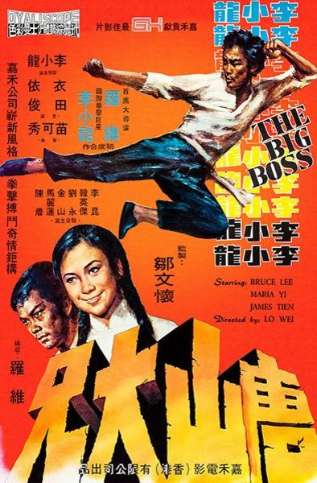

Dando su primer paso en el cine
Bruce parte inmediatamente hacia Pak Chong, en Tailandia, para rodar su primera película The Big Boss (El Gran Jefe o Kárate a muerte en Bangkok). En la primera reunión en persona que tuvo Bruce Lee con Raymond Chow, al darle la mano, Bruce le dijo: «Voy a ser la estrella china más grande del mundo».
El rodaje de la película, que duró seis semanas, se inició en unas condiciones muy duras, y con un presupuesto de cien mil dólares.
Bruce regresó a los Estados Unidos solamente para grabar tres episodios más de Longstreet, donde apareció como el maestro de artes marciales de Mike Longstreet (James Franciscus). A inicios de octubre, Lee volvió a Hong-Kong para el estreno de The Big Boss; película que se convirtió en un éxito rotundo logrando recaudar en su primer día trescientos setenta y dos mil dólares, a los tres días alcanza el millón y llega hasta un total de tres millones doscientos mil dólares.
Tras el estreno de The Big Boss, Bruce se ganó la cúspide de la popularidad china, donde se le consideraba un héroe nacional.
Consagración

Luego de la película, diversas productoras querían tener a Bruce en sus filas, sin embargo, Lee decidió rechazarlos a todos y cumplir el contrato que tenía con la Golden Harvest, dedicándose por completo a su próxima película, Fist of Fury (Furia oriental o Puños de Furia), donde se explotó la superioridad del Kung Fu. La película logra bater un récord de taquilla establecido por su anterior película The Big Boss.
Junto a Raymond Chow crean la Concord Production Inc., en la cual Bruce aportaba el aspecto creativo y Chow el económico.
El primer proyecto de Lee y Chow fue Way of the Dragon (El regreso del Dragón o El furor del Dragón), película en la cual Bruce fue actor, guionista, coproductor y director. La grabación de este filme se llevó a cabo en Roma, Italia. La película se convirtió en otro éxito de taquilla, batiendo nuevamente todos los récords establecidos por sus anteriores películas.
Luego de esto Bruce recibió una oferta de quinientos mil dólares por parte de Ted Ahley, presidente de la Warner Brothers, para ser el actor principal en la película de artes marciales Blood and Steel; a Bruce no le agradó el nombre y pidió que se llame Enter the Dragon (Operación Dragón), título que los productores aceptaron. Esta fue la primera película de artes marciales chinas en ser producida por un estudio importante de Hollywood (Warner Brothers), en asociación con la compañía Concord Production Inc.
El filme comenzó a grabarse en enero de 1973, la producción cinematográfica de esta nueva película era mejor que las anteriores, pero aun así Bruce estaba nervioso, ya que era su primer proyecto internacional, él se preocupó y trabajó en cada uno de los aspectos de la película, quería que la película fuera buena y aceptada por el público occidental.
Enter the Dragon se exhibió en Hong Kong seis días después de su muerte, mientras que el estreno en Estados Unidos se dio recién en agosto de ese año. La película tuvo un éxito de taquilla abrumador, recaudando doscientos millones de dólares en su estreno.
Game of Death fue la siguiente película en su filmografía; esta se comenzó a grabar a finales de 1972, antes de iniciar Enter the Dragon, por lo que Bruce Lee solo grabó cuarenta minutos de la película antes de su prematura muerte, se estrenó en 1978, haciendo uso de un doble y notorios y hasta burdos montajes.